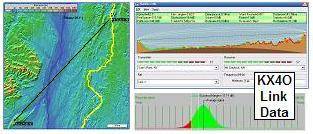

Mt Equinox
2014 SUCCESS! NJ3U Rory just finished enjoying the ARRL 100th anniversary convention in Hartford Conn and while in the area, this Jersey HAM figured he would activate Mount Equinox VT for the ATGP APRS event. Mt Equinox is located on approx 7000 acres of pristine Vermont mountain top land and is the home of a Carthusian Monastery. This 3848 foot peak is the highest peak in the Taconic Mountain Range and offers great paths to Mt Greylock to the South and Mt Washington to the North making it ideally suited for our purpose. Rory arrived at the foot of the mountain Sunday morning at 0900 ahead of the staff to be first in line for the 2.5 mile drive up to the top. The roadway is maintained via a toll of 15 dollars per car and is known as the longest private toll road in the US. The winding route to the top is filled with many breath taking vistas and white knuckle curves, but it’s all worth it when you arrive at the St Bruno Scenic View Center the location of his APRS EQINOX-12 station.
Rory used a Kenwood D710 for the digi feeding a MFJ 2-440 mag mount model 1729 that delivers 2.6dbi on 2m and 6.3 dBi on UHF. Given the sensitivity to the sites main use as a religious sanctuary Rory didn’t run from the car battery (idling) but instead used Anderson power poles and large high amp gator clamps onto a 12 vdc lead acid battery from my JD lawn tractor with a spare AGM 7.5 AH just in case. Voice comms at 5 watts used a VX8 which also was monitoring the ATGP packet frequency. The other direct voice channel was monitored with another MFJ 1729 mag mount or my hts’ Diamond SRH77/CA.
Equinox went active @ 1015 and Greylock and MtWashington were easy links. The initial 50 watts was reduced to manage battery consumption. GDHill was apparently heard direct @ 1149 before SamsPt or PaMnt came online (an interesting fluke). Eqinox-12 saw Kathdn-15 @ 1159 and Sprngr-1 @ 1231 for the first time, and then again many more times.
Next year, Rory plans to include a pc for logging as the paper method was labor intensive on the back end to support overall path analysis.
2013 Planning: Richard, N2SPI is activating a new mountain (Equinox) to try to fill in the gap between Sam's Point, Greylock and Mt Washington this year. See the summary spread sheet.
2012 Planning: This site was not manned in 2012 and was the broken link in the overall GOlden Packet Attempt on Saturday 21 July.
2011 Report: No volunteer found. Without a link station we lose a lot of link margin trying to make Greylock to Mt Washington in one hop... See RF link to Mt Washington.
2010 Report: Unmanned.
2009 Report: We attempted to switch over the N1NCI-3 digipeater to the event frquency, but on event day, there was a radio problem. See the 2009 New Hampshire N1NCI Report
See the Golden Packet plan. . This is one of the 15 hill-top sites from Georgia to Maine we hope to visit this summer on 26 July for 6 hours to attempt to relay a text message using hand-held radios the 2000 mile length of the Appalachain trail. This is to be a no impact Leave-No-Trace type of event of a few individuals at each site. . Other hikers equipped with APRS ham radios are welcome to participate with advance notice.
New Hampshire needs a link station that is ideally situated between Mount Greylock to the Southwest and Mount Washington to the Northeast to help provide plenty of link margin to overcome the intermod and RFI at those sites. APRS maps indicate that there is an APRS digipeater already in a pretty good location at N1NCI-3. This digipeater is operated by the CCDX club.
ALTITUDE: . . . . . . . . . . . . 1230 feet (Antenna 320' above that)
POSITION: . . . . . . . . . . . . 43-02.00N / 72-22.04W
LINK NORTHEAST: . . . . Mount Washington. Easy drive-up.
See
RF details
by KX4O
LINK SOUTHWEST: . . . . Mount Greylock. Easy drive-up.
See
RF details
by KX4O
REPEATERS:. . . . . . . . . .
DIGIEATER: . . . . . . . . . . N1NCI-3
TEAM LEADER:. . . . . . . Dale Paquin [n1nci*myfairpoint.net]
COMMENTS: .
Dale reports that he has access to Comstudy software and operates the N1NCI digi that can link between Greylock and Mt Washington (we hope). See the info on his N1NCI-3 digipeater .

DETAIL LINK ANALYSIS BY KX4O: Be sure to follow the two RF links at the
top of this page to see the excellent and very detailed RF link analysis
performed for every link in this project by KX4O John Huggins.
Each RF link shows the terrain map
elevations, the AT trail in yellow, the RF path loss itself
including fresnel zones and finally a
statistical plot of the probabilities of link availability. We will very
much be looking at the results of this project compared to the pre-event
analysis and predictions. All of KX4O's links are shown on his
AT Links Page.
And onward from the N1NCI-3 digipeater to Mount Washington also looks good.
Vermont: N1BQ-3 Comments: East of Burlington: Brian B. Riley [brianbr*mac.com] reports: I am spitting distance here from "The Long Trail" which predates the AT. It runs from Mass border to canadian border. The AT and the LT are one in the same until it passes Killington Peak in the middle of the state. At that point the AT departs from the LT heading more or less due East crossing the Connecticut River and running through streets of Hanover, NH (Dartmouth College) and back into the hills heading toward the White Mountains. So I am about 60 miles North of the AT
Bob, WB4APR
See my other GENERAL page on APRS applications and Ideas on the AT
Return to the APRS HOMEPAGE or SiteMap.
{kind=link}